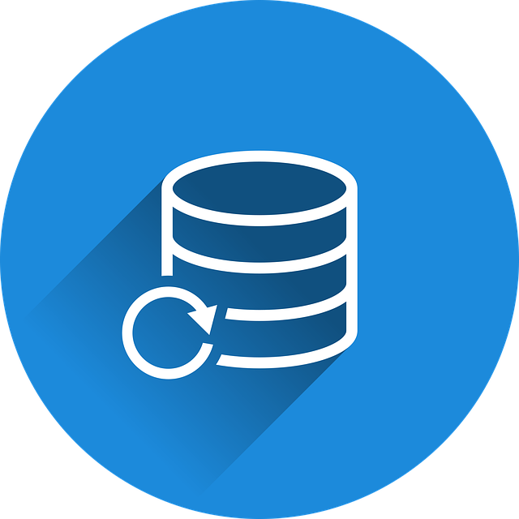
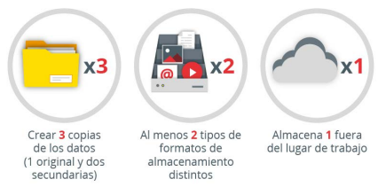

6. Sistemas de copias de seguridad
1. ¿Qué es una copia de seguridad?
Una copia de seguridad es una copia de archivos físicos o virtuales a un lugar secundario para su conservación en caso de que haya un fallo de seguridad en un sistema o cualquier otro tipo de problema.
|  | |
| Pixabay license | |
2. La regla 3-2-1 de las copias de seguridad
Esta regla de las copias de seguridad se hace para tener una mayor seguridad en caso de que se puedan perder datos. Significa realizar 3 copias de seguridad, usar 2 dispositivos distintos de almacenamiento y dejar 1 copia de seguridad fuera del trabajo o del hogar.

Figura 1. Regla 3-2-1 INCIBE.
Realizar 3 copias de seguridad: por probabilidad es más seguro realizar 3 copias de seguridad en vez de 1 o 2. Además, como veremos al final, la tercera copia es conveniente que esté guardada fuera de nuestro puesto de trabajo.
Usar 2 dispositivos distintos de almacenamiento: para que haya más seguridad, es muy recomendado no usar 2 dispositivos del mismo tipo, es decir, si se ha realizado una copia de seguridad en un USB, habría que realizar la otra en un portátil por ejemplo y no en otro USB. Ya que, si falla una memoria USB, es probable que la otra también falle, y eligiendo otro dispositivo esta posibilidad disminuye.
Almacenar 1 copia de seguridad fuera del lugar de trabajo u hogar: aparte de realizar las dos copias de seguridad anteriores, es conveniente realizar una tercera en otro lugar por si hay algún problema externo. El mejor lugar para alojar esta tercera copia de seguridad sería en la nube.
Para saber más
INCIBE. Política de copias de seguridad. https://www.incibe.es/sites/default/files/contenidos/guias/guia-copias-de-seguridad.pdf
3. Copias de seguridad en Cloud
Las copias de seguridad en la nube son muy recomendables ya que traen muchas ventajas consigo. Por ejemplo, se puede acceder a los datos respaldados desde cualquier parte del mundo que tenga conexión a internet. No hay que realizar ningún gasto monetario en ningún dispositivo hardware para almacenar los datos. Además, si se guardan en sitios oficiales, están en servidores seguros contra amenazas y mayoritariamente cifradas.
Realizar las copias en la nube no suelen ser afectadas por catástrofes físicas. Por ejemplo, en un incendio o si simplemente si se pierde el disco duro esto con el servicio en la nube no pasaría.
Para saber más
Si quieres conocer cómo hacer copias de seguridad de Máquinas Virtuales: https://www.nakivo.com/es/vm-backup/
4. Referencias
- Decálogo ciberseguridad empresas: una guía de aproximación para el empresario (INCIBE)
- Sección "2.3 Copias de seguridad".
- Guía para la implantación de medidas de seguridad informática en la PYME
- Sección "3.10 Copias de respaldo y recuperación".
Obra publicada con Licencia Creative Commons Reconocimiento No comercial Compartir igual 4.0